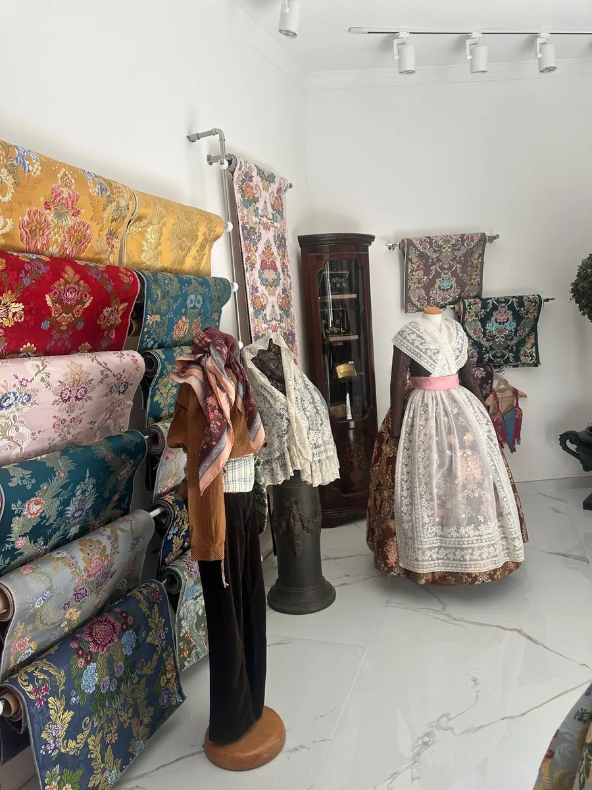
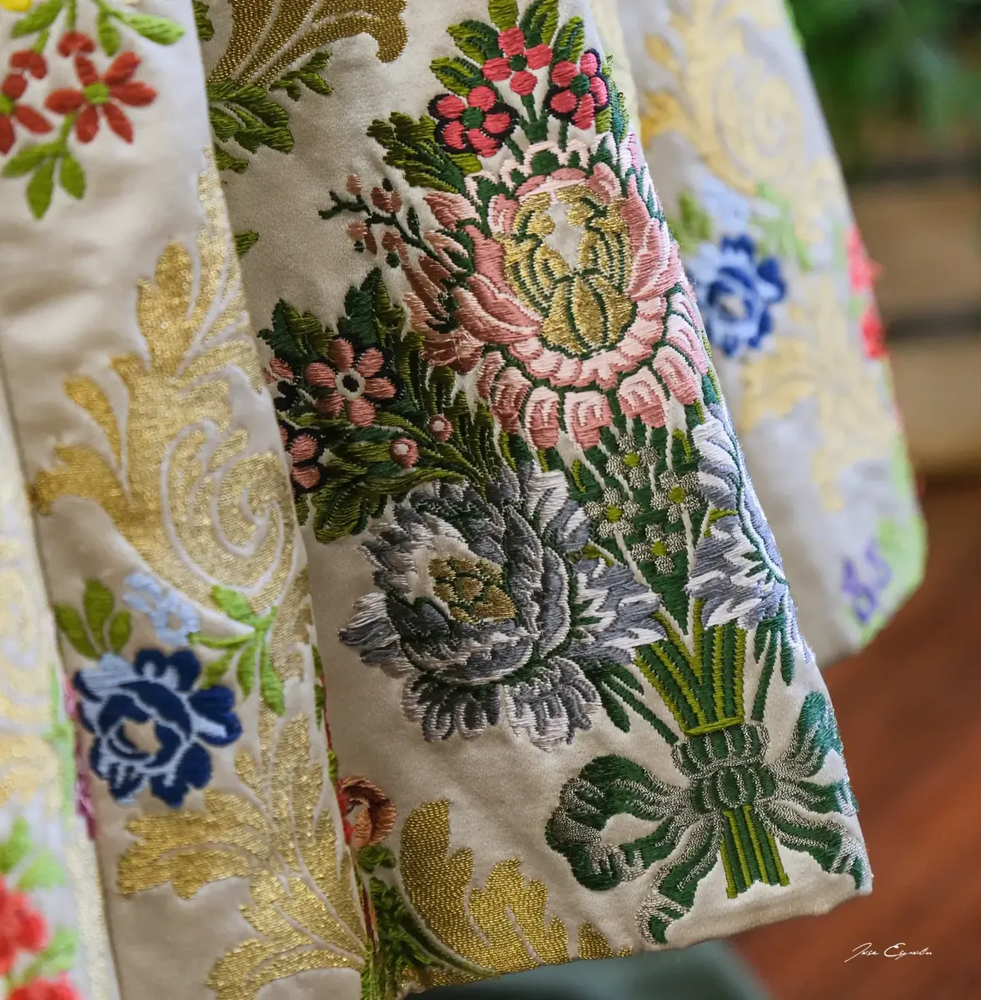

Tienda Centro
C/ Burriana, 21
46005 Valencia
✦ Confección a medida
Más de cuarenta años cosiendo trajes de fallera y de valenciano en nuestro taller. Cada traje se diseña a medida, se prueba sin prisas y no sale del taller hasta que está de verdad perfecto.
✦ El taller
Paquita Martorell abrió Cosas Cucas en el Cabañal de Valencia, el barrio donde empezó todo.
Hoy siguen sus hijas, Noelia y María, en el taller de la calle Burriana. Con ellas han llegado nuevos dibujos exclusivos y cambios en la forma de confeccionar. En julio de 2026 pasamos de la tienda de Grabador Esteve a la de Burriana, 21, y en el Cabañal seguimos en Vicent Gallart, 49: hemos cambiado de calle, no de manera de trabajar.
Aquí se diseña, se corta, se cose y se prueba. Trabajamos con cita previa: así podemos dedicarte el tiempo que merece tu traje, sin prisas.

✦ Cómo trabajamos
Ven a la tienda o escríbenos al WhatsApp 667 775 501 y te damos día y hora.
Te asesoramos sin compromiso y dejamos claro quién pone la tela y qué piezas entran: cancán, cintas, puntillas, forros, manteleta, zapatos…
El corte y la costura se hacen en nuestro taller, y las pruebas, en la tienda.
✦ Un traje de verdad
El traje de proclamación de Meri, Fallera Mayor 2027 de la falla Mossén Josep Cuenca-Pinedo, es un espolín «Tetuán» tejido a mano por la Compañía Valenciana de la Seda.
El 2 de julio de 2026 nos trajo la tela y empezó nuestra parte. Con el espolín cortamos y cosimos en el taller la falda, de mucho vuelo y fruncida en la cintura, y el corpiño con mangas cortas de farol, rematadas con un volante de encaje.
Todas las pruebas se hicieron en la tienda de la calle Burriana; la primera, el 5 de agosto. En septiembre el traje estaba casi listo y solo faltaban las cintas.
Lee la historia completa →
✦ Indumentaria de honor
Falleras Mayores de València y Cortes de Honor que han llevado trajes de Cosas Cucas. Toca una foto para verla en grande.
✦ Preguntas frecuentes
No hay un plazo fijo, pero los talleres se llenan pronto antes de Fallas. Cuanto antes vengas, mejor.
Depende sobre todo de la tela y de las joyas, y también de los bordados y de la confección. Un espolín tejido a mano lo encarece mucho. Te hacemos el presupuesto sin compromiso; pregunta siempre qué piezas entran.
Sí. Al encargar el traje se deja claro quién pone la tela: Meri, por ejemplo, nos trajo su espolín y con él le confeccionamos el traje. Si no la tienes, en la tienda tenemos telas exclusivas y te asesoramos sin compromiso.
No hay una cifra fija: depende del ancho de la tela, de la talla y del vuelo. Como referencia, para el traje completo de la Fallera Mayor de València se encargan 13,50 m de espolín (12,50 m para la infantil), más 3,50 m de seda lisa para el corpiño de manga larga.
Se hace un corpiño entero aparte, que se combina con la misma falda. Si te gusta un modelo concreto, enséñanoslo.
Sí. El traje de valenciano lo confeccionamos a medida, para adulto y para niño.
✦ También hacemos
✦ Ven a vernos
Te atendemos en cualquiera de nuestras dos tiendas, con cita previa.
C/ Burriana, 21
46005 Valencia
C/ Vicent Gallart, 49
46011 Valencia
Escríbenos y te damos cita.
Consulta el horario de cada tienda en la web principal.
Ver horario →